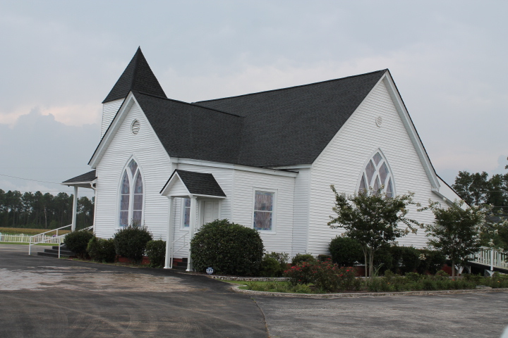
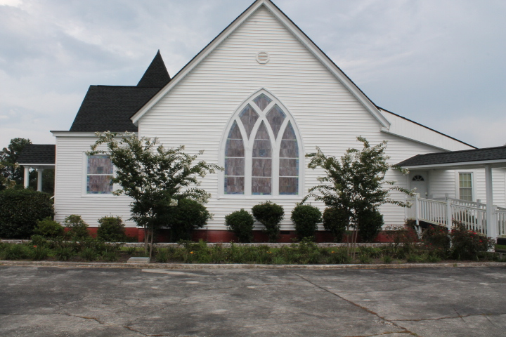

Our Facilities
Philadelphia Southern Methodist's facilities are designed to support worship, learning, and fellowship for all ages. The iconic white main building, with its classic steeple, stands as a beacon of our presence in the community. Adjacent to it, you'll find our Sunday School wing, dedicated to nurturing spiritual growth. Our welcoming Fellowship Hall provides ample space for gatherings and events, supported by a well-equipped kitchen. At the heart of our church is the Main Sanctuary, where we join in worship every Sunday at 11:00AM.
Main Sanctuary
Fellowship Hall
Sunday School
Kitchen
Church Cemetery
Church Outside

